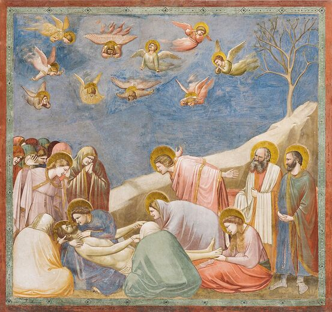

Uma exposição imaginária no Museu de Réplicas de Vila Velha, ES
Instituição fictícia criada por Letícia Damasio Santoro
Museu de Réplicas · Vila Velha
Entrar na exposição
Giotto di Bondone, Lamentação sobre Cristo Morto, c. 1305. A transição do ícone ao gesto humano.
Apresentação curatorial
Entre o século XIII e o século XVIII, a arte europeia atravessou uma das transformações mais profundas de sua história: o olhar deixou de ser predominantemente teológico e simbólico para tornar-se progressivamente espacial, corporal e mundano. Do Ícone ao Espelho propõe um percurso imaginário por esse processo, articulando obras medievais e produções da Idade Moderna (Renascimento, Maneirismo, Barroco e Rococó) em um diálogo visual contínuo.
A proposta parte da ideia de que medieval e moderno não se opõem como eras fechadas, mas se entrelaçam. A arte gótica e o trecento italiano já anunciam a preocupação com o corpo humano e com o espaço pictórico; o Renascimento sistematiza a perspectiva e a medida do homem; o Maneirismo tensiona esses cânones; o Barroco dramatiza luz, movimento e poder; o Rococó refina o prazer e o ornamento.
O recorte temático abrange produções entre aproximadamente 1300 e 1770, privilegiando obras que evidenciem a transição do sagrado para o profano, da bidimensionalidade hierárquica para a profundidade ilusionista, e da função devocional para a afirmação estética e social da imagem. O Museu de Réplicas de Vila Velha, com salas de pé-direito duplo (6 m), oferece condições ideais para essa narrativa monumental.
Critérios e narrativa expositiva
Esta curadoria organiza dezoito obras em cinco salas temáticas, distribuídas de forma equilibrada entre o medieval e os quatro momentos da Idade Moderna. Os critérios de seleção combinam representatividade histórica, qualidade iconográfica das peças e capacidade de cada obra dialogar com as demais no percurso expositivo.
Priorizou-se: (1) obras-canônicas que marquem rupturas ou continuidades estéticas; (2) diversidade de suportes (pintura, escultura, manuscrito iluminado); (3) presença de autores e escolas distintas (italianos, flamengos, espanhóis, franceses, holandeses); (4) temas recorrentes (corpo, luz, espaço, poder, prazer) que permitam leituras comparativas entre salas.
A história que esta exposição deseja contar é a invenção progressiva do olhar moderno: de um mundo ordenado pelo sagrado e pela eternidade para um mundo medido pelo homem, pela natureza, pelo teatro da cena barroca e, finalmente, pelo gosto refinado das elites do século XVIII.
Percorra a exposição sala a sala. Clique em cada porta para adentrar o setor e conhecer as obras selecionadas.